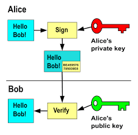

3 Remote Computing
Overview

{kind=link}
Do we need to be in a lab to access lab documents? What if we need to run code on a device with higher computing power than our personal computer? Enter remote computing!
Remote computing is the action of accessing a computing resource that is in a different physical location from the user. It becomes an essential ability for most labs for two main reasons. First, in a lab with many members, it is essential that shared files live in a space easily accessible by everyone. A file server, such as a network attached storage (NAS), will satisfy this need. A file server is a centralized server that provides storage for files and can be accessed by other devices when granted permission.
Moreover, remote computing can allow lab members to utilize the computing ability of devices with much higher processing power (CPU, GPU, or memory) than their own device. One example of a collective computing system with higher processing power and efficiency, is a computer cluster.
Computer Clusters
Computer clusters are a network of interconnected computers that function together as a unified system to perform complex tasks. Each computer doesn’t look like the computers one might typically see. Often, they are flat and stacked together in metal racks and placed in an organization’s data center. The primary purpose of a computer cluster is to divide large intricate tasks into smaller more manageable sub-tasks. Thus, allowing each computer in the cluster to process a portion of the work simultaneously.This parallel processing significantly enhances the speed and efficiency of large-scale data processing. Like an orchestra, if each musician is assigned to play a single part, two things happen: 1. They can play music richer and more complex than a single instrument can (a cluster can compute algorithms that are much more complex than a single computer). 2. Multiple different melodies can be played at the same time (multiple different lines of algorithm can be executed simultaneously, in the context of computation, this simultaneous execution can lead to higher overall computational efficiency).
With the orchestra analogy in mind, let’s now explore the main components of a computer cluster.
Key Terms
Head Node: Each computer or server in the cluster is called a node. The head node is the primary computer that serves as the main access point. When a user logs into the cluster, we will be accessing the head node. The assignment of a head node is arbitrary, appearance wise, the head node computer looks identical to the rest of the nodes. The head node typically does not have many resources, so you must never launch a script on the head node! However, what this node does is assign the execution of a script to a computing node that would be the best at executing the given command. The head node is like the conductor of the orchestra. Though, they do not play any of the instruments, they play an essential role in assigning certain bars of music to be played by musicians while maintaining the overall coherence of the group.
Compute Node: Compute nodes are the machines where the computing jobs are executed. Each node in the cluster has its operating system and CPU (and sometimes GPU). Nodes communicate with each other through middleware software that manages communication between them. Like you might’ve guessed, compute nodes are like the instrument players; they are instructed when and what code to carry out and form the main execution portion of an orchestra or, in this case, a cluster.
Importance of Computer Clusters
Computer clusters are crucial for labs like VCL (Viusal Cognition Lab), enabling the efficient computation of large, multidimensional data like EEG. They allow for the processing of large datasets, enhancing the lab’s ability to handle complex tasks such as decoding (discussed in later sections). Clusters also enable developers and researchers to scale data analysis by adding more nodes, increasing computational power. At times, we assign different parts of a script to separate machines, ensuring optimal processing speed. You can think of it like a team of farmers, each responsible for a row of strawberries, working together to harvest the entire field.
Permissions
Now that you’ve gotten a good sense of the main types of remote computing methods and the structure of a computer cluster. Let’s briefly dive into how to access a file server, a head node, or any entity requiring permission.
Varying levels of computer access should be assigned based on users’ roles. This concept is called user permissions, a key aspect of access control. Assigning permissions enhances both security and system performance. Permissions can be granted to groups, users, or objects with the appropriate security identifiers in the domain. Common permissions include: read, modify, change owner, and delete. A user with “Read-Only” access will not be able to edit the file, like on Google Docs or Microsoft Word. Nonetheless, regardless of the level of permission granted to a user, access to a server or remote computer must be granted by a protocol. The most common protocols are SSH, and password-based authentication.
Accessing Remote Computers
SSH allows individuals to securely access and send commands to a private network even when connected to an unsecured network, including the one at your home. SSH uses encryption to establish a secure connection between the person seeking access and the server.
During the encryption process, it will scramble up the data that is being transmitted through the connection between the server and the local machine that the user is. If a hacker attempts to access this information during the transmission, it will appear as mostly static noise, rather than meaningful information. The encryption protects all aspects of the session, including authentication credentials, commands, outputs, and files, ensuring that the data transmitted between the client and server remains private and secure.
But how can the designated recipient then decrypt the message? The SSH system creates a key pair, one private and one public, when a user first sets up access. The public key, which can be shared with anyone, is used to encrypt data. The private key, which one should not share, is used to decipher the data. Now, whenever the user attempts to gain access to a remote computing system (we use a remote computer in this case, but it could be anything requiring access permission), a connection request is initiated. The server will then check if the public key attempting access is one that is already logged to the server’s system. The server then generates a random piece of data only decipherable by the private key associated with this public key. If the message can be deciphered, permission is granted! Another way, one that is also commonly used, is the username and password system. This system is likely familiar to you. When logging in, a user will be prompted to add a username. If the username already exists in the system, users will be prompted to enter a password. If the password matches the one logged in the database, the permission is granted!
Transferring Files Between Local and Remote Systems
How do you move things from your device on to a remote system like a file server or cluster? Intuitively, you might say drag and drop using a window manager such as Finder. Though, this answer isn’t wrong, let’s explore the underlying mechanism behind the “drag-and-drop”. The exploration can give you a more in-depth sense of navigation between local and remote system and pick up ways to quicken the process. You will deepen the terminal skills you developed in Chapter 2 here!
We will cover file transferring tools such as rsync and SCP. We will explain each of these tools below.
Rsync
Rsync is a terminal utility that allows you to synchronize files between local and remote servers. Warning: It is easy to accidentally overwrite your files using rsync. Each rsync command should follow the basic format: rsync [options] [origin] [destination]. Let’s break this down: the origin is the directory that currently contains the file you want to transfer. The destination is where you want it to go. There are many options that dictate whether you keep the original time stamps and permissions on the file, how much information to show about the progress of the transfer, and more. A list of many common options are provided in the table below, but you can type man rsync in your terminal to read about more.
| Command | Description |
|---|---|
-a |
Copy files recursively and preserve ownership of files when files are copied |
--dry-run |
Runs a trial run of the command; does not make any actual changes. This is incredibly helpful if you are worried that you might overwrite files or transfer a large amount of data to the wrong place. |
--delete |
Deletes files in the destination directory if they don’t exist in the origin directory. |
--exclude="*.fileType" |
Exclude all of a specific file type. Replace fileType with the actual file type that should be excluded. For example, --exclude="*.log" will exclude all .log files |
-h |
Produce easily readable output, not just numbers |
-q |
Runs the quiet version of the command; all of the processes that are run will be in the background and will not be shown |
-v |
Runs the verbose version of the command; all of the processes that are run will be written out for the user to read and debug |
-z |
Compress the data synced |
Here is an example rsync command: rsync -av /home/username/experiments .. Here, we recursively transfer the “experiments” folder to the current directory. You might be thinking that this seems a lot like cp that you learned about in Chapter 2, and you wouldn’t be wrong. While you can rsync between two local folders as we did here, it’s real power comes from working on a remote machine. Consider this example: rsync -av user@my_server:/home/username/experiments .. Here, we are also transferring a folder called “experiments” but from a remote server to our current local directory. The user will then be prompted for her credentials before the transfer will take place. One can also push to a remote computer in a similar way: rsync -av /path/to/transfer user@my_server:/home/username/.
Rsync is more efficient at transferring a large number of files simultaneously than the SCP tool (discussed below and note, the SCP tool is being deprecated due to security vulnerabilities).
SCP
Like rsync, SCP is a tool used to securely transfer files to and from servers. SCP leverages SSH mechanisms to ensure data confidentiality and user authentication. With SCP, a user can move files between remote and local machines. SCP is a built-in command in the main operating systems discussed in this textbook: macOS, Windows, and Linux. However, compared to rsync and other file transfer tools, SCP is more limited in that it only transfers files—but it does so at a fast rate.
While this is true, rsync is slower because it checks which files have already been transferred, avoiding unnecessary duplication, and ensures that all transfers are accurate and complete. This often saves time in the long run since, if SCP is interrupted it has to restart the entire transfer, whereas rsync assesses what remains and continues from there. This, combined with security vulnerabilities make rsync the better transfer protocol in nearly every case!
Further Reading
We recommend the following sources for more information on this topic:
Security and Privacy from MIT’s “Missing Semester” course.
Julia Evans, A Toy Remote Login Server.